5. Dynamical systems with three or more variables
5.1 The Oregonator
The best studied example of nontrivial kinetic behaviour of a chemical system is the Belousov–Zhabotinsky reaction. This is an oscillating reaction of the oxidation of citric or malonic acid in the presence of catalytic amounts of cerium ions. A chemically justified mechanism of this reaction was proposed by R. Field, E. Körös and R. Noyes and is denoted FKN in the scientific literature. This mechanism includes ten chemical reactions with seven intermediate substances. Later it was found that a simplified reaction scheme retains the most important features of the proposed mechanism. This scheme includes the following stages.
1. Reactions proceeding at a high concentration of the bromide ion:
Using the following notation
,
the stages given above are written in the following way:
2. Reactions proceeding at a low concentration of the bromide ion:
Assuming the rate of the radical reactions and the concentration of Ce3+ to be high, we write the overall reaction in the form:
where .
3. Regeneration reactions:
These reactions are written in the following form:
The stoichiometric coefficient f and the rate constant of the oxidation of the organic acid change depending on the nature and the degree of bromination of the organic acid. Thus, these quantities are variable parameters.
On the whole, the following reaction scheme is obtained:
Under the assumption of constancy of the concentration of the bromate ion (substance A), the reaction scheme given above includes three variables – the concentrations of the substances X, Y and Z. The system of kinetic equations corresponding to reaction scheme contains three equations and has the form:
Reduction of the system of equations to dimensionless variables gives the following result:
where
The use of the known kinetic characteristics of the individual stages makes it possible to estimate the values of all the parameters in the scheme:
The model corresponding to the system of equations with parameters bears the name "Oregonator". Note that the parameters in the system of equations are such that the rates of change of all the variables differ in order of magnitude.
The steady-state points are found by setting the right-hand sides of equations equal to zero. It turns out that for any f > 0 in the positive octant of the x, y, z space there is a unique steady state:
The coefficient matrix of the linearised system of equations has the form:
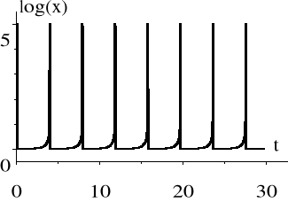
Using matrix one can obtain the third-order characteristic equation, determine the sign of the real parts of its roots and find out the stability of the steady state for given values of the parameters. Indeed, parameters are found at which the singular point is unstable, and the numerical solution of the system of equations displays oscillatory behaviour (Fig. 5.1).
5.2 Attractors of different dimension
As we have seen, the dynamical behaviour of a system described by three variables can be analysed by the same methods as the behaviour of systems with two variables. In any case, the behaviour of the system is represented as a set of phase trajectories in the phase space. Since phase trajectories have a direction corresponding to the evolution of the system in time, the term "phase flow" is often used for their description. The dimension of the phase space is determined by the number of independent variables describing the system. If a dynamical system is described by three or more essential variables, the phase space is three- or more dimensional. Let us write the differential equations describing a dynamical system in generalised form:
where is an n-dimensional vector of the independent variables describing the system; is the vector of their time derivatives; p is the vector of parameters.
Stationary singular points are found by setting the right-hand sides of equations equal to zero and solving the system of equations obtained. The stability of the singular points is analysed in the same way as we did in the case of a system of two differential equations. For this purpose the system of equations is linearised. Using the coefficients of the system of linear equations obtained, the sign of the roots i of the characteristic equation is determined. The singular points are stable if all the real parts of the roots i are negative, and unstable otherwise. Naturally, the classification of singular points in the case of three or more variables becomes considerably more complicated than in the case of two variables considered earlier in Chapter 2. For example, in systems with three variables singular points of the node–focus or saddle–node type can be found. This is connected with the fact that one pair of roots of the characteristic equation describes the behaviour of the phase trajectory in projection onto one plane, while the other pair does so in projection onto another plane in the phase space. Obviously, in different projections the behaviour of the phase trajectory can be different. λλ
Earlier we also saw that the phase flow can tend not only to singular points but also to singular trajectories – limit cycles. A special notion, the attractor, is used to describe such behaviour. An attractor is a manifold in the phase space to which phase trajectories tend. A stable limit cycle and a stable singular point are a particular case of an attractor. A manifold of the same kind, if it is unstable, is often called a repeller. If we consider a dynamical system with two variables, attractors and repellers can have dimension zero (singular points) or one (limit cycles). In the analysis of a phase space of higher dimension, attractors of higher dimension can be found.
Consider a dynamical system that undergoes a Hopf bifurcation. In such a bifurcation a limit cycle arises, that is, a closed trajectory in the phase space that describes the oscillatory behaviour of the system. The oscillatory behaviour consists in the fact that after the oscillation period T1 the system returns to the same point of the phase space (Fig. 5.2).
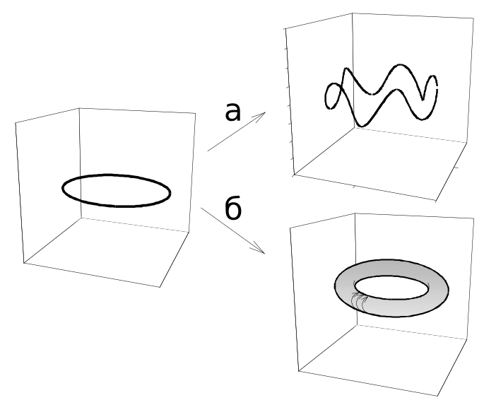
Let now, in the course of one more bifurcation, one more oscillatory mode – an oscillation with period T2 – arise in the system. The kinetic behaviour of the system depends on the ratio of the oscillation periods T1 and T2. If the ratio of the periods is rational, that is, , where m, n are integers, oscillations with period will be observed in the system. In this case the attractor is a limit cycle – a complex closed curve in the phase space (Fig. 5.2.a). If, however, the ratio of the periods T1 and T2 is an irrational number, the system cannot return to the initial point, since the condition is never fulfilled. In this case the phase trajectory passes successively through all the points of a two-dimensional manifold – a torus (Fig. 5.2 b). Thus, if a limit cycle in a three- or more dimensional phase space loses stability, an attractor with dimension equal to two can arise. The dynamical behaviour of the system will in this case be quasiperiodic. Fig. 5.3 shows examples of periodic and quasiperiodic kinetics of a dynamical system.
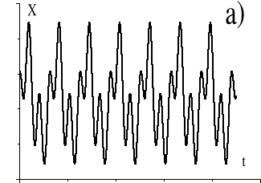
5.3. Sequence of bifurcations of a dynamical system. The strange attractor
In the previous section it was shown that a change of the parameters of a multidimensional dynamical system can lead to a complication of its kinetic behaviour, which is caused by the appearance of attractors of higher dimension. Thus, a whole sequence of bifurcations is characteristic of dynamical systems, in each of which the existing attractor becomes unstable and a new stable attractor arises. It has been shown on mathematical models that such a sequence of bifurcations can be arbitrarily long and be accompanied by the appearance of stable manifolds of ever higher dimension. Besides bifurcations connected with the appearance of attractors of higher dimension, a complication of kinetic behaviour is also possible in a period-doubling bifurcation. In this case, when the control parameter reaches a critical value, the limit cycle, while retaining its stability, acquires a more complex form, as shown in Fig. 5.4.
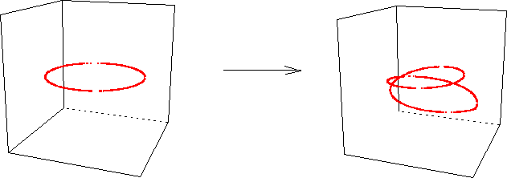
The sequence of period-doubling bifurcations can also, generally speaking, be infinite and thus lead to ever more complex kinetic behaviour. Despite the complexity of the kinetic picture observed, the attractors obtained are quite definite stable manifolds to which the flow of trajectories in the phase space tends. It should be noted, however, that a long sequence of bifurcations of the type given above is observed only in some abstract mathematical models in sufficiently narrow ranges of parameters. With a different choice of parameters, and especially in real experimental systems, two or three bifurcations of this type are, as a rule, observed. Then, after the control parameter reaches a new critical value, the kinetic behaviour of the system becomes aperiodic, random. Such a regime of the course of a dynamical process is called dynamical chaos. In this case one fails to find attractors of the usual type in the system. The best known example of chaotic behaviour is the turbulent flow of a liquid or a gas. Let us illustrate the chaotic behaviour of a dynamical system with the following example. Let a certain chemical reaction be described by the following set of differential equations:
The unique singular point corresponding to non-zero values of the variables is determined by the following relations between the parameters:
A linear stability analysis of this point shows that phase trajectories are repelled from it in the xy plane, but are attracted to it along the z axis. Let us illustrate the behaviour of the phase trajectories using the numerical solution of the system of equations (Fig. 5.5).
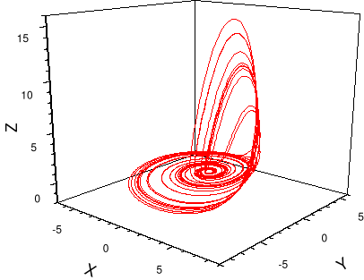
It can be seen from the figure that, moving away from the singular point in the xy plane, the phase trajectory at a certain moment rises along the z axis and returns to the region of the singular point along the z axis. An essential feature of this picture is that the point of return of the trajectory into the xy plane is random. Thus, Fig. 5.5 shows that the phase flow in the system under consideration tends to a certain bounded volume of the phase space; however, being in this volume, the phase trajectories behave not regularly but randomly. An attractor displaying this property is called a "strange attractor".
The time dependence of the variable x corresponding to Fig. 5.5 is shown in Fig. 5.6.
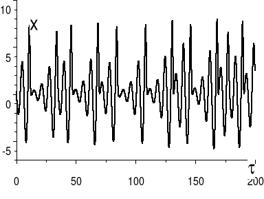
5.4 Lyapunov exponents. The Poincaré map (section)
Let us compare Fig. 5.3b, which demonstrates quasiperiodic motion, and Fig. 5.6, which shows the stochastic behaviour of a dynamical system. One can notice that, despite the fundamental difference between these types of kinetic behaviour, they cannot, generally speaking, be distinguished visually on the basis of a finite segment of a kinetic dependence. Several methods have been developed in order to determine the type of kinetic behaviour.
One of the methods of determining the type of an attractor consists in calculating the Lyapunov exponents. It is based on the fact that in the case of stochastic behaviour phase trajectories can diverge without bound in the phase space with time. Let the vector of dynamical variables x(t) be some phase trajectory passing through the point x(0). Consider the phase trajectory x1(t) passing through the point x1(0), which is a small distance away from x(0). The time evolution of the difference between these trajectories is described by the differential equations of the system under study. While the difference between these two trajectories is small, the linearised system of differential equations can be used to estimate ; its solution, as is well known, is:
where Cj are constants of integration determined by the initial conditions; ej are the eigenvectors corresponding to the different eigenvalues j of the matrix of linear coefficients of the differential equations. λ
Each eigenvector ej specifies, in the space of vectors , a direction such that an initial displacement in this direction retains its direction with time and changes in magnitude according to an exponential law with coefficient . Obviously, with the passage of time a single exponential with the largest coefficient remains in solution . From this it is clear that the expression
will change in jumps as the direction of the initial displacement is varied, taking a finite series of values , where n is the dimension of the phase space. The quantities , calculated in accordance with , are called the Lyapunov exponents. They show how far close trajectories move apart from each other with time. The distance between trajectories near a stable singular point tends to zero, since the trajectories tend to this point. Thus, all the Lyapunov exponents are negative in this case. In the presence of a limit cycle, the distance between trajectories in a certain direction remains constant, and one of the Lyapunov exponents is equal to zero. In the case of a singular point of the invariant-torus type in a three-dimensional phase space, two Lyapunov exponents turn out to be zero, corresponding to the two frequencies of motion. In the case of chaotic behaviour of the system, at least one of the Lyapunov exponents is positive. Thus, in a three-dimensional phase space the type of attractor is determined in accordance with the following rules:
The Lyapunov exponents can be calculated numerically if the differential equations describing the system under study are known. In the analysis of the type of attractor in experimental systems, the autocorrelation function of the variable under study is often used:
or its spectral density (power spectrum):
where are the Fourier coefficients of the function x(t).
The autocorrelation function and the spectral density are related to each other by the expression:
The spectral density of the variable x(t) shown in Fig. 5.3b is presented in Fig. 5.7a. It can be seen that in the case of quasiperiodic behaviour (attractor – an invariant torus) discrete lines are observed in the frequency spectrum. In the case of the stochastic behaviour shown in Fig. 5.6, the frequency spectrum becomes continuous (Fig. 5.7b). Thus, the type of attractor determining the dynamical behaviour can be determined from the plot of the spectral density.
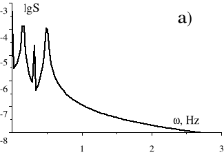
One more method of theoretical analysis of the behaviour of a dynamical system is based on the use of Poincaré maps (sections). This method is applied to reduce the dimension of the phase space being analysed. Let a surface intersecting the phase trajectories be drawn in the phase space (Fig. 5.8). Let us mark on this surface the points at which it is crossed by a phase trajectory in one direction.
In the case of a stable limit cycle, the sequence of these points converges to one or several stationary points. In the case of quasiperiodic motion, the sequence of points fills, in arbitrary order, a certain curve on the surface (Fig. 5.9).
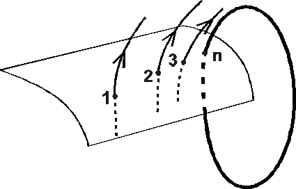
In stochastic motion the sequence of intersection points fills, in an irregular manner, a certain region on the intersecting surface. Thus, an analysis of the set of points at which the phase trajectory crosses the chosen surface makes it possible to find out the type of attractor under study.
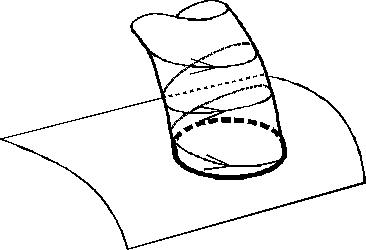
Essentially, the Poincaré map method consists in replacing the analysis of a dynamical system described by differential equations by the analysis of the behaviour of a certain discrete transformation. Indeed, the coordinates of each subsequent intersection point can be found from the coordinate of the preceding point, that is:
where xn and xn+1 are the coordinates of the intersection point on the surface, P are the parameters of the dynamical system, and the function specifying the transformation law is determined by the equations of the dynamical system.
This makes it possible to study theoretically the possible types of dynamical behaviour using simple model discrete transformations. In particular, the one-dimensional transformation
as the parameter is varied displays such properties of dynamical systems as the appearance of a limit cycle, period-doubling bifurcations and the birth of a strange attractor.λ
5.5. Fractals in chemistry. The dimension of a strange attractor
Ideas about geometric objects with fractional dimension – fractals – are used to explain the properties and for the quantitative description of strange attractors. In this connection, let us briefly consider the use of this concept in chemistry.
Fractal objects are introduced in mathematics in the course of a generalisation of the concept of the dimension of a geometric object. Let us illustrate such a generalisation with the following example. Let there be a certain bounded curved line. To determine its length, let us use a small segment of length as the measuring instrument. If the number of such segments laid along the curve is N, then the approximate length of the curve is determined by the total length of the segments:ε
In a similar way we estimate the area of a plane figure by measuring it with small squares with side :
Obviously, the smaller , the more accurate the estimate of the length of the curve L and of the area S will be. ε
Let us now introduce the concept of the dimension d using the following formula:
The quantity d calculated in accordance with is called the Hausdorff dimension. Let us express the quantity N() from expression ε and substitute into
In a similar way, using , we obtain that the Hausdorff dimension of a plane figure is equal to 2. Thus, the estimates of the dimension of ordinary geometric figures obtained using formula coincide with our intuitive ideas.
Let us now give an example of a set of points whose dimension is fractional. For this purpose, let us take a segment of unit length, divide it into three parts and remove the middle part (Fig. 5.10).
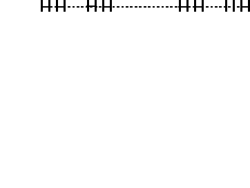
The two remaining segments of length 1/3 will also be divided into three parts, and the middle part of each will be removed. We obtain four segments of length 1/9. We shall repeat the operation described an infinite number of times. The set of points remaining from the segment is called the Cantor set. Fig. 5.10 shows the construction of the Cantor set after three removal operations.
Let us estimate the dimension of the Cantor set. The length of the segment , which is convenient to use for measuring the length of the set at each stage, is: ε The number of segments used Using formula , we obtain the dimension
Thus, the dimension of the Cantor set is fractional. It is greater than the dimension of a set consisting of a bounded number of points, which is equal to 0, but less than the dimension of a segment, which is equal to 1.
Another example of an object with fractional dimension is the "Sierpinski carpet". Let us construct it in a similar way. Consider a triangle with side length 1. Let us find the midpoints of the sides of the triangle and join these points. The inner triangle obtained will be removed. We shall perform the same operation with the three remaining triangles (Fig. 5.11).
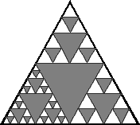
After an infinite number of such operations we obtain a set whose dimension is equal to . Thus, the dimension of the set obtained is 1<d<2.
It can be seen from the examples given that the property of self-similarity is characteristic of fractals, i.e. of objects with fractional dimension. A part of a fractal reproduces the whole object in its entirety. This property is called the property of scaling invariance (from the English "scale"). As a result, fractal objects look the same at different scales of observation. In reality, true fractal objects are impossible, since it is impossible to reproduce the structure of an object as the scales are decreased to infinity. Thus, fractals are a mathematical abstraction. This feature unites fractal objects with other abstract geometric objects – the straight line, the plane, the circle and so on, which are likewise not observed in the world around us.
Let us now return to the consideration of strange attractors. Obviously, if an attractor in the phase space of a dynamical system has fractional dimension, then in an infinitesimal neighbourhood of a point of the phase space belonging to such an attractor one can find a point that does not belong to it. Since the properties of the phase trajectories passing through such points are different, the behaviour of the system will change essentially as a result of infinitesimal fluctuations that move the phase trajectory from one point to another. As a result, the change of the variables of the system is perceived by the observer as random, and prediction of the phase trajectory becomes impossible. This explains the chaoticity of the behaviour of a system near a strange attractor.
The use of the concept of fractals in chemistry is not confined to the explanation of the behaviour of phase trajectories. Despite the fact that ideal fractals cannot exist in nature, many real objects display fractal properties to a greater or lesser degree.
A widespread example of fractal objects in nature is clusters formed upon association of small colloidal particles. The dimension of such aggregates is often determined by analysing their photomicrographs. One of the simplest methods is called the box-counting method. In the analysis by this method, the photomicrograph is divided into 22n identical squares, and the number N of squares that contain points belonging to the cluster is counted. The tangent of the slope angle of the dependence of the logarithm of the number N on the logarithm of the square size as n is increased gives the value of the dimension d. However, difficulties arise in the interpretation of the results, since the dimension of a real three-dimensional object is determined from its plane projection.
Another phenomenon in the analysis of which the concept of fractal dimension is invoked is the phenomenon of adsorption. The structure of adsorbents displays a very wide variety. Sorbents consisting of associates of almost spherical particles (aerosil) are known. A large number of adsorbents having pores of various sizes and shapes are also known. The adsorption of molecules of various sizes can be used to determine the effective surface area of an adsorbent. It turns out that in many (though by no means all) cases such measurements lead to the conclusion that the adsorption surface is fractal. As an example, Fig. 5.12 shows the results of measurements of adsorption on activated carbon.
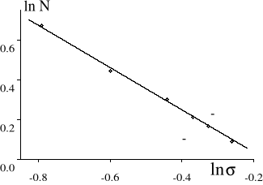
It can be seen that the logarithmic dependence of the amount of adsorbed substance n on the geometric area of the adsorbed molecule is linear. However, the slope angle of the line is not equal to unity, and thus the dimension of the adsorption surface is not equal to 2. Indeed, the expressionσ
is valid for a fractal surface, where n is the number of adsorbed molecules under limiting-adsorption conditions, and r and are the effective radius and area of the molecule. σ
Hence, by taking the logarithm we obtain:
In the experiment whose results are given in Fig. 5.12, the dimension d turned out to be equal to 2.18. The fractality of the adsorption surface is explained by the fact that adsorbate molecules, used as the unit of measurement, can make use of the structural features of the adsorbent to different degrees depending on their size (Fig. 5.13).
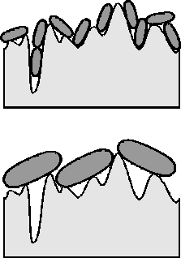
Besides the examples given above, ideas about fractal dimension are used in the study of the microstructure of alloys and composite materials, in the consideration of cracks and traces of electrical breakdown in various materials, in the analysis of particle trajectories in the course of their random walk, in the description of the conformation of flexible polymer molecules in solutions, and so on.
Problems
1. Propose an autonomous system of differential equations describing a limit cycle in three-dimensional space.
2. In one of the early works on the modelling of the Briggs–Rauscher oscillating reaction (oxidation of malonic acid or other organic substrates by potassium periodate in the presence of the Mn2+ catalyst), the following kinetic scheme of the transformation of intermediates was used:
where C is the initial substance, whose concentration is constant; X, Y, Z are intermediate substances; P is the reaction product.
Using numerical calculation, show that this scheme can display oscillatory kinetic behaviour. Find the parameters corresponding to the oscillatory regime of the reaction.